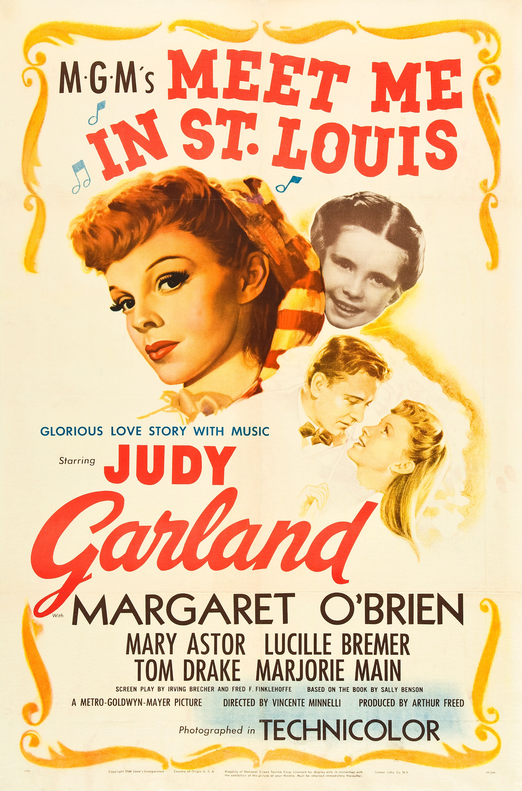

Meet Me in St. Louis
17th Academy Awards
(Oscars 1945)
4 Nominations, 0 Awards
| Nominations | ||
|---|---|---|
| Category | Nominees | Result |
| Writing (Screenplay) | Fred F. Finklehoffe and Irving Brecher | Nominated |
| Cinematography (Color) | George Folsey | Nominated |
| Music (Scoring of a Musical Picture) | Georgie Stoll | Nominated |
| Music (Song) "The Trolley Song" |
Hugh Martin and Ralph Blane | Nominated |